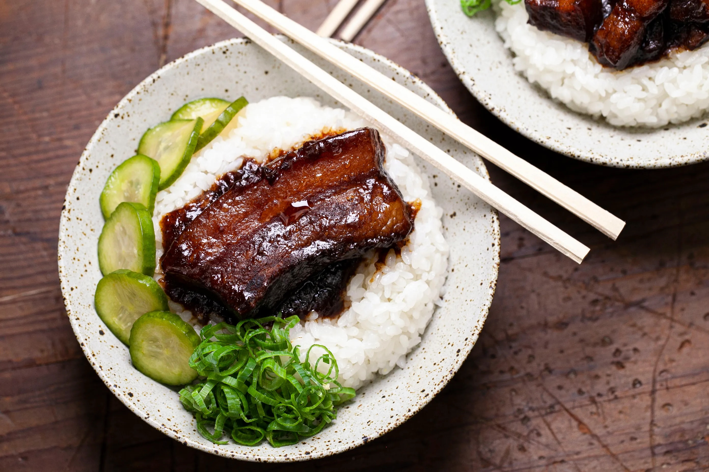

Lu Rou Fan
Adapted from Vice

Ingredients
- 2.5 kg pork belly
- 60g rock sugar, smashed
- 2 tbsp + 2 tsp neutral oil
- 2-inch piee ginger, peeled & finely chopped
- 5 scallions, finely chopped
- 1 head garlic, peeled & finely chopped
- 1 cup/250 ml soy sauce
- 1 cup/250 ml dark soy sauce
- 3 tbsp five-spice powder
- 2 tsp shallot sauce
- 230g fried shallots
- 2 tbsp smooth peanut butter
- 430g rice
- 2 star anise
Procedure
- Add pork belly to boiling water and cook about 25 minutes.
Transfer prok to a cutting board and slice into desired size.
- Melt rock sugar with 1 tbsp oil in large saucepan over medium
until it turns dark amber, 12 to 14 minutes, then stir in 1/2 cup or
125 ml hot water. Transfer to heat proof bowl.
- Add 1 tbsp oil and increase heat to medium-high. Cook pork
belly, flipping once, until golden, 7 to 8 minutes for large pieces
and 5 to 6 minutes for small pieces. Add in about 1 tbsp of the rock
sugar per batch as pork belly cooks.
- Stir in garlic, scallions, chopped shallots, garlic and cook
until soft, about 5 minutes. Add soy sauces and cook until toasted,
about 2 minutes. Stir in pork belly, five-spice, and shallot sauce.
Cook 2 to 3 minutes, then stir in dashi or water and any remaining
melted rock sugar. Bring to simmer over medium. Stir in crispy
shallots and cook, uncovered, until the pork belly is almost fork
tender, about 1.5 hours.
- Stir in the peanut butter, stirring occasionally, about 1 hour.
Keep warm
- Make rice as usual, but add 2 tbsp oil and star anise.